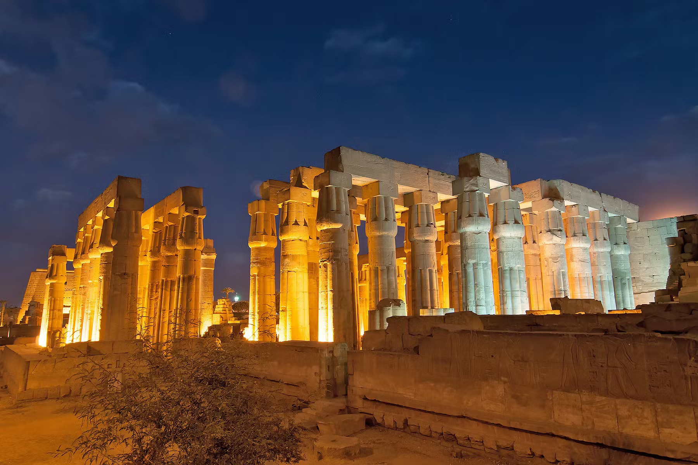
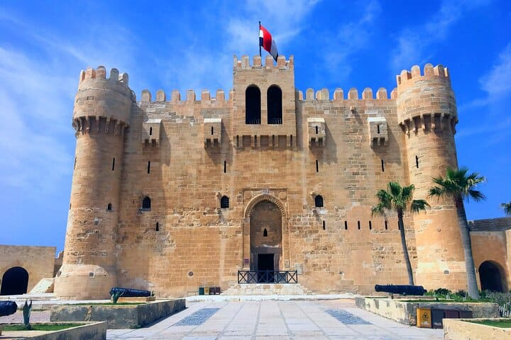
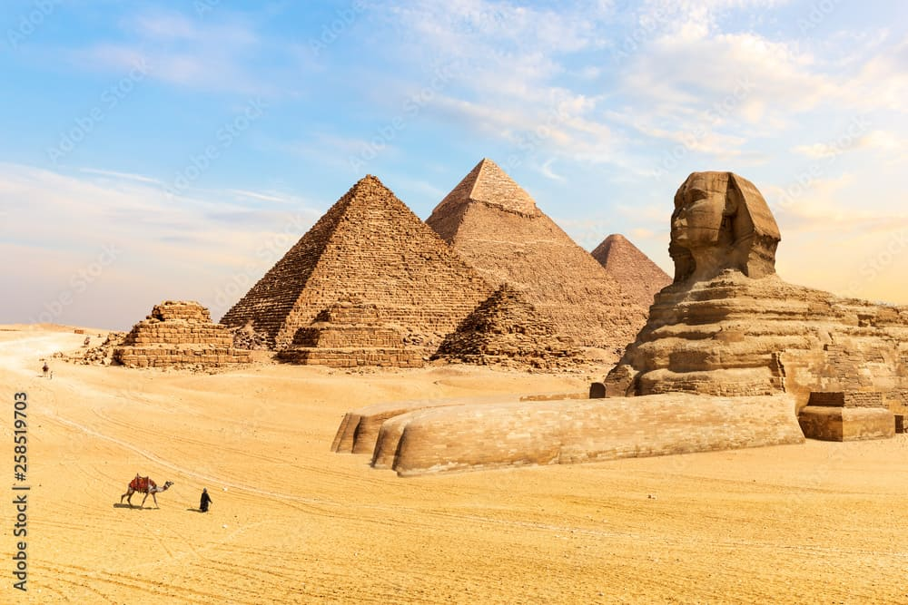

Egypt - Cradle of Ancient Civilization

Introduction
Egypt is one of the world’s oldest civilizations, located in North Africa along the Nile River. It is famous for its monumental ancient history, rich cultural heritage, and iconic landmarks.
From towering pyramids and ancient temples to bustling cities and desert landscapes, Egypt offers visitors a journey through thousands of years of history combined with modern Middle Eastern culture.
Quick Facts
- Capital: Cairo
- Population: Approximately 110 million
- Language: Arabic
- Currency: Egyptian Pound (EGP)
- Best Time to Visit: October–April
Explore Major Destinations
Jump to a specific destination
\r\n
Cairo
Region: Greater Cairo
Cairo is Egypt’s capital and largest city, often referred to as the “City of a Thousand Minarets.” It is a vibrant metropolis that blends ancient history with modern urban life.
The city is home to world-class museums, historic mosques, lively markets, and easy access to the famous Pyramids of Giza, making it the cultural and political heart of Egypt.
Must-See Attractions
- Egyptian Museum - Ancient artifacts and royal mummies
- Khan El Khalili Bazaar - Historic market and shopping area
- Citadel of Saladin - Medieval Islamic fortress
- Al-Azhar Mosque - One of the oldest mosques in Cairo
- Nile River Cruises - Scenic city views
Back to top
Luxor

Region: Upper Egypt
Luxor is often described as the world’s greatest open-air museum, located on the east bank of the Nile River.
The city contains some of Egypt’s most impressive ancient monuments, including grand temples, royal tombs, and archaeological treasures from the time of the pharaohs.
Must-See Attractions
- Valley of the Kings - Tombs of ancient pharaohs
- Karnak Temple - Vast temple complex
- Luxor Temple - Illuminated temple in the city center
- Hatshepsut Temple - Mortuary temple of a female pharaoh
- Nile Hot Air Balloon Rides - Aerial views of monuments
Back to top
Alexandria

Region: Mediterranean Coast
Alexandria is a historic port city founded by Alexander the Great and known for its strong Mediterranean influence.
The city offers a mix of ancient history, coastal scenery, and modern Egyptian life, making it a unique cultural destination along the Mediterranean Sea.
Must-See Attractions
- Bibliotheca Alexandrina - Modern revival of the ancient library
- Qaitbay Citadel - Fortress on the Mediterranean coast
- Montaza Palace - Royal gardens and historic palace
- Alexandria Corniche - Scenic seaside promenade
- Roman Amphitheatre - Well-preserved ancient ruins
Back to top
Giza Pyramids

Region: Giza Governorate
The Giza Pyramids are Egypt’s most iconic landmarks and one of the Seven Wonders of the Ancient World.
Built over 4,500 years ago, the pyramids and the Great Sphinx stand as remarkable achievements of ancient engineering and continue to attract millions of visitors each year.
Must-See Attractions
- Great Pyramid of Khufu - Largest ancient pyramid
- Pyramid of Khafre - Known for its preserved limestone casing
- Pyramid of Menkaure - Smallest of the three pyramids
- Great Sphinx - Iconic limestone statue
- Solar Boat Museum - Ancient ceremonial boat
Back to top
Travel Tips for Egypt
These tips will help travelers enjoy a safe and enriching visit to Egypt.
- Guided Tours: Hiring licensed guides enhances historical understanding.
- Weather: Summers are very hot; stay hydrated and wear sunscreen.
- Currency: Carry small cash amounts for local markets.
- Dress Code: Dress modestly when visiting religious sites.
- Health: Drink bottled water and follow hygiene precautions.
← Back to Africa Home